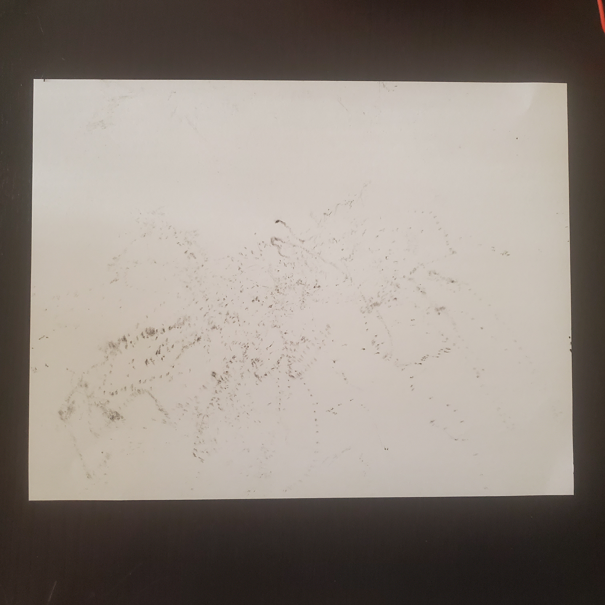
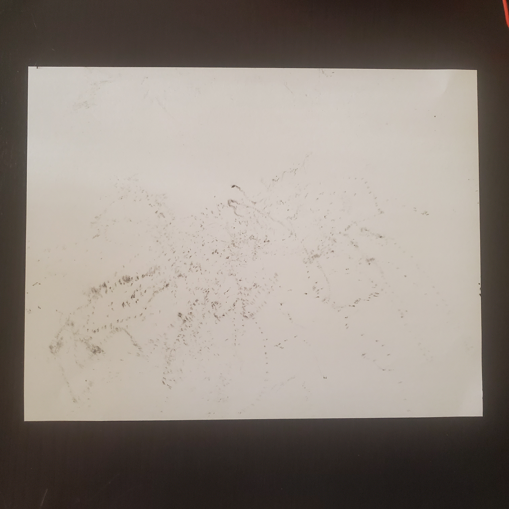

FINAL
"Machine Music Drawing" - Demonstration
"Music"
different melodies play depending on the gyroscope's orientation.


 
Artist Statement:
For my final project I wanted to see how "machines" would draw depending on the sounds, or "music", that they could hear. It's a different type of "audio visualization" in which the machine would physically draw instead of digitally. The reason why I wanted the machine to draw physically is because we're used to the "machine and art" through digital means, but not through physical means. It would show a completely different perspective of how the machine makes art especially in a way where it is mostly in control of itself. I wanted this project to relate back to the beginning of what we learned in this class about the different types of relationships we have with machines. Personally, even though we mentioned that the human is becoming more cyborg as they become "one" with them (through implants, prostheses or daily activities), I feel like we still have a "commensalism" relationship with machines. It isn't physically apparent on how machines benefit from humans but it is apparent on how humans benefit from machines. Through this project, I feel as if I am able to have an actual "mutalism" relationship with my machine; I move my box to make different sounds play and the machine listens to the sounds and draws to whatever it "feels" like drawing. Although the drawing it makes isn't of something that we can visually link to in the real world, it shows an abstract view of what the machine can visualize through audio.
. . .
Being able to create this project remotely was a challenge in itself. However, I am proud I was able to accomplish something through what I could. It was difficult to find a small enough enclosure for everything to fit in, but I made do with what I was able to find. I didn't want to drill any holes or permanently attach the entire circuit onto the enclosure because I wanted to be able to reuse the enclosure. It made my project look as "bad" as the thought of using a cardboard box, but I will most likely find (or even make) a better enclosure for this project because it's something that I'm actually proud of, want to keep, and want others to interact with to see what other "drawings" the machine could make. Soldering went smoothly as I thought of the perfboard as a "non-connected" breadboard. I did, however, place the SDA and SCL wires to the wrong pin "holes" so I just made sure to diagonally cross them to the correct pins of the Xiao (A4 and A5, respectfully). Soldering doesn't look too well though because the pins of the components were thick to begin with. Coding was a bit of a challenge to combine everything and make it work. Mapping the values of the gyroscope was especially difficult since it kept fluctuating. Although it is very faint, the "music" demonstration video presents a low melody, 2 mid melodies, and a high melody which would play depending on the orientation of the gyroscope. If I could improve my project even more, I would find a more efficient way of how the "machine" could draw without the wires getting in the way of the interactive "box".